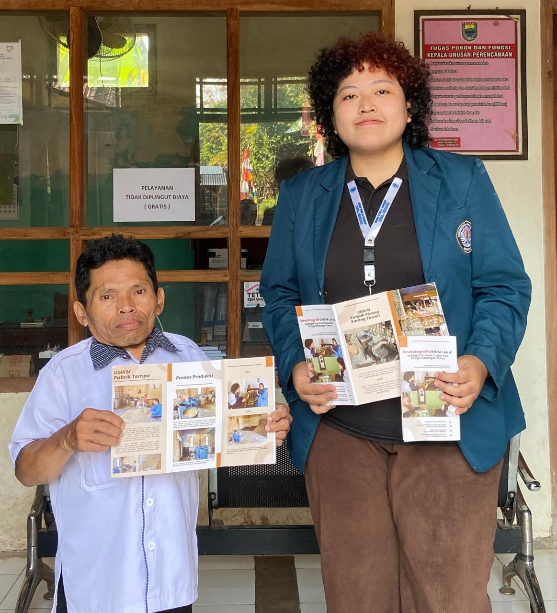

Kiat dan Upaya Mahasiswi KKN TIM II UNDIP Menggarap Etnofotografi sebagai Sarana Publisitas Potensi Desa Durenombo
Mahasiswa Kuliah Kerja Nyata (KKN) TIM II 2024 Universitas Diponegoro, Mutiara Puteri Malihah dari Program Studi Antropologi Sosial, pada tanggal 26 Juli 2024 telah melaksanakan kegiatan program kerja monodisiplin KKN, berupa pelaksanaan etnofotografi pada UMKM lokal di Desa Durenombo, Kecamatan Subah, Kabupaten Batang.
Pada kegiatan program kerja monodisiplin yang bertajuk “Etnofotografi UMKM Lokal sebagai Sarana Publisitas Pengembangan Potensi Desa” tersebut, Mutiara selaku mahasiswa KKN TIM II Universitas Diponegoro, melakukan kunjungan dan observasi mendalam terkait kegiatan para pelaku UMKM di Desa Durenombo, dan melakukan etnofotografi yang setelahnya hasil dari riset tersebut dituangkan dalam bentuk leaftlet sebagai bentuk publisitas dalam pengembangan potensi desa.
Pelaksanaan program etnofotografi dilakukan di dua UMKM yang bertempatkan di dua dukuh yang berbeda. UMKM “Keripik Pisang Sarang Tawon Enggal Maju” bertempatkan di dukuh Durenombo, dan UMKM “Tempe Berkah” berlokasi di dukuh Durensari. Mulanya pelaksanaan program ini dilakukan dengan mewawancarai masing-masing pemilik dari UMKM, yang kemudian hasil dari wawancara tersebut terungkap berbagai informasi seperti sejarah awal mula berdiri, tata cara pengolahan dan produksi, serta pula menampilkan bagaimana kegiatan yang melibatkan para pekerja dan pelaku usaha tersebut mempunyai andil dalam perkembangan dan pergerakan roda perekonomian desa.
Etnofotografi sendiri merupakan sebuah metode dalam menganalisis kebudayaan, tata cara hidup, serta komunikasi dalam kehidupan sehari-hari, yang menggunakan fotografi sebagai sebuah sarana dalam penyampaian pesan tertentu. Tujuan dari etnofotografi UMKM lokal di Desa Durenombo adalah untuk mendokumentasikan dan menggambarkan kehidupan para pelaku UMKM, yang kemudian hasil analisis dari etnofotografi tersebut ditujukan sebagai sarana untuk dapat mempublikasikan UMKM yang ada karena sejatinya mereka merupakan bagian dari segelintir potensi desa yang dapat dikembangkan.
Hasil riset dari program etnofotografi tersebut kemudian disampaikan dalam bentuk leaflet yang mencakup informasi mengenai masing-masing UMKM yang ditelisik, beserta etnofotografi dari kegiatan pengolahan dan produksi. Leaflet etnofotografi tersebut kemudian diserahkan ke pada perangkat desa di Balai Desa Durenombo. Leaflet etnofotografi b erfungsi sebagai arsip yang memiliki nilai karena mengangkat kehidupan dan kegiatan UMKM lokal sebagai potensi desa, yang kemudian leaflet etnofotografi tersebut pula dapat menjadi landasan awal jika akan ada pengembangan lebih lanjut.
Mutiara Puteri Malihah
Saya, Yaya, Seorang Mahasiswa Universitas Diponegoro yang saat ini sedang menjalani KKN di Desa Durenombo. Melalui kegiatan ini, saya berupaya untuk mengaplikasikan ilmu yang telah diperoleh serta memberikan kontribusi positif bagi masyarakat.
Recent Post


Tag Cloud
Hubungi Kami
Dukuh Durenombo, Desa Durenombo, Kec. Subah, Kabupaten Batang, Jawa Tengah 51262
+62 856-9328-46730
baldesdurenombo@gmail.com
Quick Links
© Desa Durenombo. All Rights Reserved. Created by KKN Tim II Universitas Diponegoro 2024